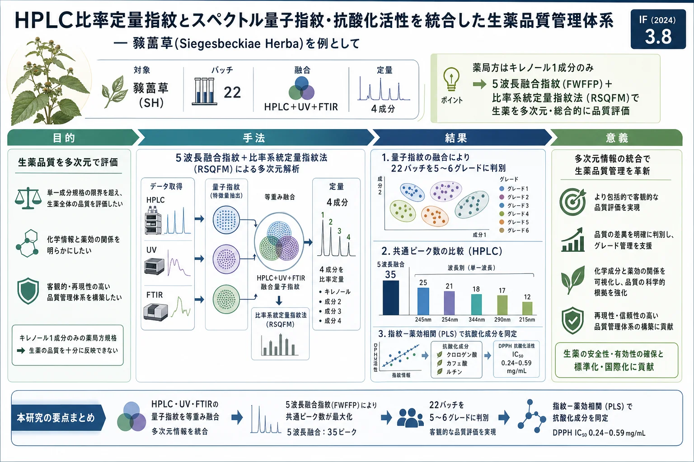

HPLC比率定量指紋とスペクトル量子指紋・抗酸化活性を統合した生薬品質管理体系 — 豨薟草(Siegesbeckiae Herba)を例として

<!-- 方針: ほぼ全訳＋必要に応じた補足。原文構成に沿って訳出。「> 補足:」は訳者注。 -->
書誌情報
- 原題: A comprehensive quality control system for Chinese herbal medicine based on HPLC ratio quantitative fingerprinting and spectral quantized fingerprinting combined with antioxidant activity: A case of Siegesbeckiae Herba
- 著者: Hui Yan, Zhenwei Zhang, Lili Lan, Guoxiang Sun（瀋陽薬科大学薬学院, 中国）
- 掲載: Journal of Chromatography A 1760 (2025) 466313. https://doi.org/10.1016/j.chroma.2025.466313
- インパクトファクター: 約3.8（Journal of Chromatography A, JCR 2024 / Clarivate。報告により3.8〜4.2）
- 受理経過: 受領 2025-07-06 / 改訂 2025-08-22 / 採録 2025-08-22 / オンライン公開 2025-08-26
補足: SH = 豨薟草（Siegesbeckiae Herba）。FWFFP = 5波長融合指紋。RSQFM = 比率系統定量指紋法。ROFP = 比率定量指紋。Smr/Pmr = 比率マクロ定性類似度／定量類似度。QFP = 量子指紋。RFPQM = 参照指紋定量法。CA=クロロゲン酸、CAA=カフェ酸、RN=ルチン、KL=キレノール。本論文は分析法開発（ケモメトリクス）の研究論文。
要旨（Abstract）
信頼できる品質管理体系は、生薬(CHM)とその製剤の品質一貫性・臨床効果・安全性の確保に不可欠である。本研究では、HPLC 5波長融合指紋(FWFFP) とその比率定量指紋(ROFP)を確立し、新規の 比率系統定量指紋法(RSQFM) で品質評価を行った。22バッチの豨薟草(SH) を6グレードに分類(0.845 < Smr < 0.980、47.0% < Pmr < 112.3%)。次に不確かさパラメータで評価の信頼性を確認(全値が閾値0.2未満で頑健)。さらに4成分の含量を標準曲線法(SCM)と参照指紋定量法(RFPQM)で測定し、両法に有意差なし(RFPQMの正確性を確認)。加えてUV・FTIRの量子指紋(QFP)で構造特性化と定性・定量類似度評価を実施。HPLC・UV・FTIRのRSQFM結果を等重み融合アルゴリズムで統合し、全SHを5グレードに分類(0.942 < Smr < 0.991、78.6% < Pmr < 128.3%)。最後に指紋−薬効相関分析でSHの潜在的抗酸化成分(クロロゲン酸・カフェ酸・ルチン)を同定。本手法はクロマト指紋・スペクトルプロファイル・精密定量・抗酸化活性を通じてSHの包括的・迅速な品質評価を可能にする。
1. 序論（Introduction）
生薬(CHM)の活性成分含量は生育環境・産地で大きく変動するため、品質管理に合理的な分析法が必要である。豨薟草(SH)は Sigesbeckia orientalis / S. pubescens / S. glabrescens の乾燥地上部で、伝統的に祛風湿・関節痛緩和・解毒に用いられる。豨薟丸(Xitong Pills)・複方豨薟草カプセル等の製剤が関節炎治療に市販されている。しかし中国薬局方(2020年版)はキレノール含量のみを単一マーカーとし、品質管理が不十分である。
クロマト指紋は国際的に認知された評価法だが、従来法は単一ピーク面積・限られた検出技術に依存し包括的評価ができない。本研究は、試料指紋(SFP)と参照指紋(RFP)のピーク面積比(ri = xi/yi)から比率定量指紋(ROFP)を構築する RSQFM を採用し、比率マクロ定性類似度(Smr)・定量類似度(Pmr)を算出する。さらに、抗酸化（フリーラジカル消去・酸化還元バランス維持に重要）をDPPH法で評価し、指紋−薬効相関を確立する。
2. 材料と方法（Materials and Methods）
2.3.1 HPLC条件
- カラム: COSMOSIL C18（5C18-PAQ, 4.6 × 250 mm, 5 μm, Nacalai, 日本）、流速 1.0 mL/min、カラム温度 35 ± 2 ℃
- 移動相: A=0.1%(v/v)リン酸水、B=アセトニトリル
- グラジエント: 0–15 min 95–80%A / 15–30 min 80–70%A / 30–40 min 70–50%A / 40–45 min 50–20%A / 45–50 min 20–5%A / 50–55 min 5–95%A
- 5波長(215・245・254・290・344 nm)を融合してFWFFPを構築
2.3.2 FTIR条件
ican-9 FT-IR（ZnSe ATR・DTGS検出器）。試料:KBr=1:25(w/w)。4000–400 cm⁻¹・1 cm⁻¹間隔、分解能 16 cm⁻¹、積算8回、25 ℃、各3反復。
2.3.3 UV条件
Agilent 1260（DAD）、カラムの代わりにPEEK管(5000 mm × 0.12 mm)。190–400 nm・2 nm間隔、フローインジェクション(FIA)、キャリヤー A:B=1:1、PEEK管 35 ℃、流速 0.5 mL/min、注入 2 μL、2分で検出。
2.3.4 抗酸化活性
DPPH法。試料希釈液とDPPH溶液を 37 ℃・40分反応後、517 nm で吸光度低下を測定（各3反復）。DPPHラジカルを50%消去する濃度(IC50)を線形内挿で算出。
2.5 グレード判定
- RSQFM(8段階): G1(Smr≥0.95, 95≤Pmr≤105%)／G2(≥0.90, 90–110%)／G3(≥0.85, 80–120%)／G4(≥0.80, 75–125%)／G5(≥0.70, 70–130%)／G6(≥0.60, 60–140%)／G7(≥0.50, 50–150%)／G8(<0.50 等)
- 不確かさ(8段階): G1(U≤0.05)〜G8(U>0.50)。Uが0に近いほど信頼度高。
3. 結果と考察（Results and Discussion）
FWFFP（5波長融合指紋）
3D クロマトグラムから情報豊富な5波長(215・245・254・290・344 nm)を選定。FWFFPは 35の共通ピーク を与え、単一波長(215 nm=12、245 nm=25、254 nm=21、290 nm=17、344 nm=18)を上回り、より多くの成分を捉えた。方法のRSDは——相対保持時間(RRT) < 0.3%（製剤 < 0.35%、全体 < 0.6%）、相対ピーク面積(RPA) < 3.84%（< 2.28%、< 2.5%）と良好。
RSQFMによる評価
22バッチを 6グレード に分類(0.845 < Smr < 0.980、47.0% < Pmr < 112.3%)。不確かさパラメータは全て閾値0.2未満で頑健。単一波長データは情報が限られ、5波長統合のFWFFPがより信頼できる結果を与えた。
4成分定量（SCM vs RFPQM）
4成分(クロロゲン酸・カフェ酸・ルチン・キレノール)をSCMとRFPQMで定量し、両法に有意差なし（RFPQMの正確性を確認）。
UV・FTIR量子指紋とHPLC・UV・FTIR融合
UV(共役構造)・FTIR(双極子モーメント変化成分)の量子指紋で構造特性化。3手法を 等重み融合 すると、全SHは 5グレード(0.942 < Smr < 0.991、78.6% < Pmr < 128.3%)に分類された。融合評価ではSmr-F > 0.940、Pmr-F 78.6–128.3%（許容70–130%内）。Pm-F値で S8=グレード5、S9=グレード4、残りはグレード1〜3。HPLCとUVの評価は概ね一致、FTIRはばらつきが大きく、融合により単一手法の限界を克服。同一産地でも収穫法・収穫後処理・保存条件の差で評価が変動しうる。
指紋−抗酸化活性相関
DPPH法で20バッチのIC50を測定（IC50 0.24–0.59 mg/mL、低いほど抗酸化強い）。25の特徴成分のピーク面積とIC50でPLS回帰を構築（訓練15・予測5に分割）:
- 訓練セット: R²Y = 0.929、Q² = 0.752、RMSEE 0.0219／RMSEcv 0.0336
- 予測セット: R²Y = 0.969、Q² = 0.742、RMSEE 0.0472／RMSEcv 0.0689
VIP > 1 から、クロロゲン酸・カフェ酸・ルチン が潜在的抗酸化成分として同定された。
4. 結論（Conclusion）
HPLCの5波長融合指紋＋RSQFM、UV・FTIR量子指紋、4成分の精密定量、DPPH抗酸化活性の指紋−薬効相関を統合し、豨薟草の包括的・迅速な品質評価体系を確立した。クロマト指紋・スペクトルプロファイル・精密定量・薬効を結びつけることで、生薬とその製剤の品質管理に新たで実行可能な戦略を提供する。
補足（実務的示唆）: 薬局方がキレノール1成分のみを規定する現状に対し、本研究は「複数波長を融合(FWFFP)し、比率で定性・定量類似度を出す(RSQFM)」点と「HPLC＝分離・UV＝共役構造・FTIR＝官能基という別原理を融合する」点が要点。さらに指紋−薬効(抗酸化)相関で“効く成分”(クロロゲン酸・カフェ酸・ルチン)を実証しており、単なる化学的一致でなく薬効に紐づくマーカー選定の好例となる。実務では、ルーチンのHPLC比率指紋＋RFPQMで標準品コストを抑えつつ、抗酸化指標成分を品質指標に加える設計が考えられる。